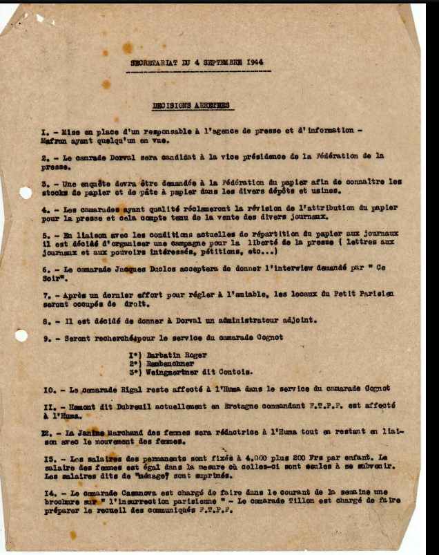
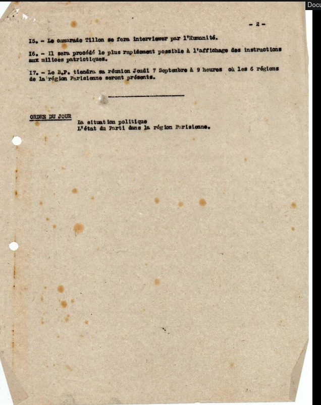
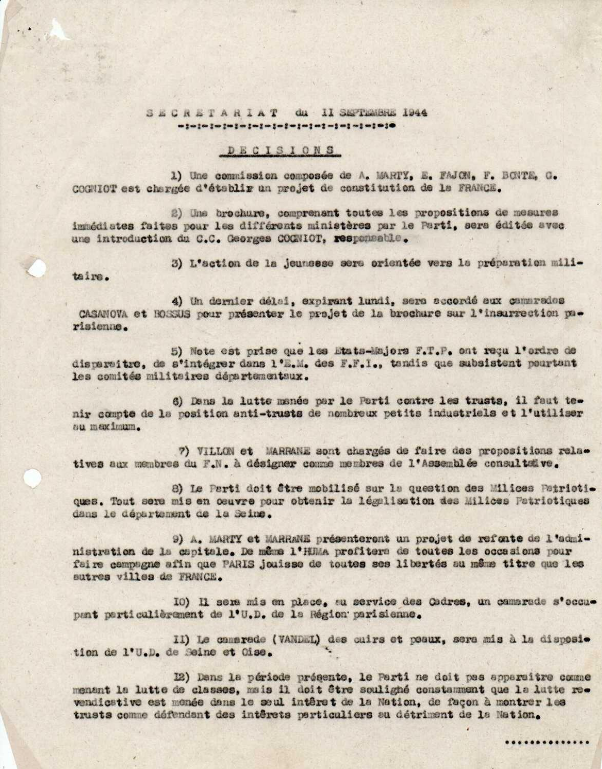
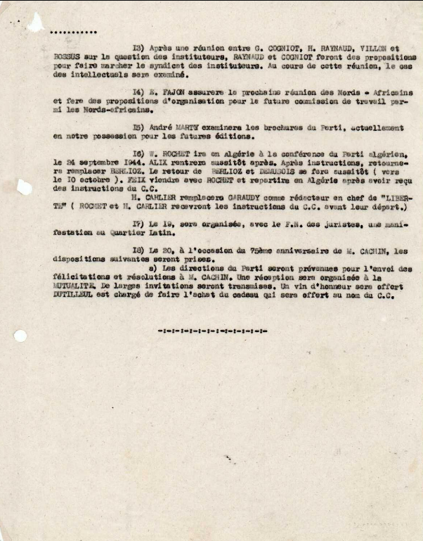
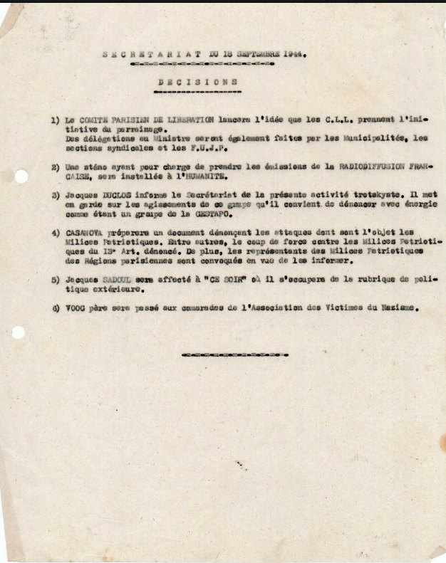

Secretariat du Parti Communiste Francais
Home
Transcription
Facsimile
Index des noms
Index des lieux
Index des Organismes
Secretariat du 4 septembre

Secretariat du 11 septembre

Secretariat du 18 septembre
